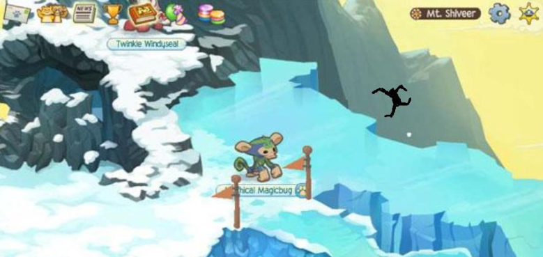

Silverstorm792
ArtistRegistered: ▒▒▒ ▒▒, ▒▒▒▒
Last Active: Today
About Me:
Hye there! I’m Silver, or Silv if we’re close. I’m a traditional artist but I’m learning digital art too. In my spare time I like reading and playing Animal Jam (you might know me from there). Feel free to send me a message about anything!
Favorite animal: spotted hyena
Favorite music: Radiohead, Porcupine Tree/Steven Wilson, Pink Floyd, Muse
Favorite book series: Wings of Fire
~*~ you can't stop me... ~*~
Pastagraphy
Community Posts

Fan art of the character Aglaope (better known as Aggy) from one of my favorite stories, Townsend. I’ve always thought her design was amazing, especially the intestine chains (sorry I’m kinda weird for that XD)

I need to know if someone else remembers this. I haven't played Animal Jam much lately but I used to be really into it, and I knew all the myths and creepypastas. Fman122, decompose1, Don't Break the Ice, The Goat Myth... but there's one I haven't been able to find.
Recent Comments
"Peeker would totally win lol. He literally can literally just sink people into the floor. Stephen is just some austrian dude xD"
"Hye!! The shading on this is amazing ^^ what brush settings do u use?"